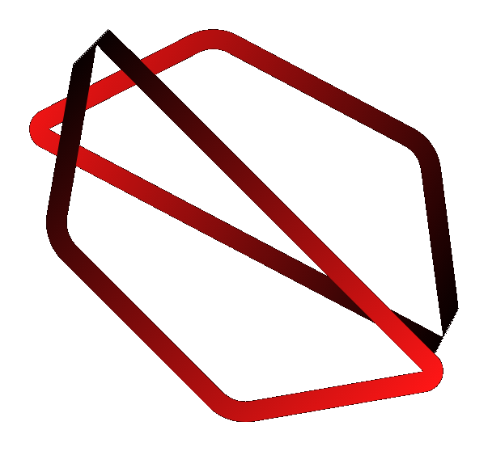

01
AI Systems
RAG and agentic workflows
Build retrieval pipelines, agentic RAG flows, multi-agent setups, vector search layers, and evaluation-ready AI application logic.

Nithees KannaPython ML Developer / Agentic AI / MLOps
I am Nithees Kanna, a Python Machine Learning and AI Developer focused on RAG systems, agentic workflows, model training, data pipelines, databases, and production automation.
Selected Positioning
Build retrieval pipelines, agentic RAG flows, multi-agent setups, vector search layers, and evaluation-ready AI application logic.
Work across collection, cleaning, feature preparation, model training, validation, and practical experimentation in Python.
Automate checks, integrate CI/CD tests where feasible, monitor systems, and support deployment workflows including Google Vertex AI.
Technology Map
How I Work
Clarify objective, data shape, metrics, constraints, and the expected user workflow.
Connect data, retrieval, model logic, APIs, and automation into one testable flow.
Validate outputs, add checks, monitor behavior, and prepare for iteration in production.
Contact